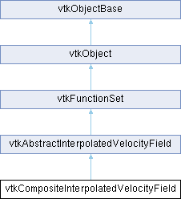

|
Etrek
|
|
Etrek
|
An abstract class for obtaining the interpolated velocity values at a point. More...
#include <vtkCompositeInterpolatedVelocityField.h>

Classes | |
| struct | DataSetBoundsInformation |
Public Member Functions | |
| virtual void | AddDataSet (vtkDataSet *dataset, size_t maxCellSize=0) |
| int | FunctionValues (double *x, double *f) override |
| int | InsideTest (double *x) |
| virtual int | SnapPointOnCell (double *pOrigin, double *pProj) |
| void | SetLastCellId (vtkIdType c, int dataindex) override |
| void | SetLastCellId (vtkIdType c) override |
| void | CopyParameters (vtkAbstractInterpolatedVelocityField *from) override |
| vtkTypeMacro (vtkCompositeInterpolatedVelocityField, vtkAbstractInterpolatedVelocityField) | |
| void | PrintSelf (ostream &os, vtkIndent indent) override |
| vtkGetMacro (LastDataSetIndex, int) | |
| vtkGetMacro (CacheDataSetHit, int) | |
| vtkGetMacro (CacheDataSetMiss, int) | |
| Public Member Functions inherited from vtkAbstractInterpolatedVelocityField | |
| vtkGetObjectMacro (LastDataSet, vtkDataSet) | |
| void | SelectVectors (int fieldAssociation, const char *fieldName) |
| void | ClearLastCellId () |
| vtkTypeMacro (vtkAbstractInterpolatedVelocityField, vtkFunctionSet) | |
| virtual void | Initialize (vtkCompositeDataSet *compDS, int initStrategy=INITIALIZE_ALL_DATASETS) |
| vtkGetMacro (InitializationState, int) | |
| vtkSetMacro (Caching, bool) | |
| vtkGetMacro (Caching, bool) | |
| vtkGetMacro (CacheHit, int) | |
| vtkGetMacro (CacheMiss, int) | |
| vtkGetMacro (LastCellId, vtkIdType) | |
| vtkGetStringMacro (VectorsSelection) | |
| vtkGetMacro (VectorsType, int) | |
| vtkSetMacro (NormalizeVector, bool) | |
| vtkGetMacro (NormalizeVector, bool) | |
| vtkSetMacro (ForceSurfaceTangentVector, bool) | |
| vtkGetMacro (ForceSurfaceTangentVector, bool) | |
| vtkSetMacro (SurfaceDataset, bool) | |
| vtkGetMacro (SurfaceDataset, bool) | |
| int | GetLastWeights (double *w) |
| int | GetLastLocalCoordinates (double pcoords[3]) |
| virtual void | SetFindCellStrategy (vtkFindCellStrategy *) |
| vtkGetObjectMacro (FindCellStrategy, vtkFindCellStrategy) | |
| Public Member Functions inherited from vtkFunctionSet | |
| vtkTypeMacro (vtkFunctionSet, vtkObject) | |
| void | PrintSelf (ostream &os, vtkIndent indent) override |
| virtual int | FunctionValues (double *x, double *f, void *vtkNotUsed(userData)) |
| virtual int | GetNumberOfFunctions () |
| virtual int | GetNumberOfIndependentVariables () |
| Public Member Functions inherited from vtkObject | |
| vtkBaseTypeMacro (vtkObject, vtkObjectBase) | |
| virtual void | DebugOn () |
| virtual void | DebugOff () |
| bool | GetDebug () |
| void | SetDebug (bool debugFlag) |
| virtual void | Modified () |
| virtual vtkMTimeType | GetMTime () |
| void | PrintSelf (ostream &os, vtkIndent indent) override |
| void | RemoveObserver (unsigned long tag) |
| void | RemoveObservers (unsigned long event) |
| void | RemoveObservers (const char *event) |
| void | RemoveAllObservers () |
| vtkTypeBool | HasObserver (unsigned long event) |
| vtkTypeBool | HasObserver (const char *event) |
| vtkTypeBool | InvokeEvent (unsigned long event) |
| vtkTypeBool | InvokeEvent (const char *event) |
| std::string | GetObjectDescription () const override |
| unsigned long | AddObserver (unsigned long event, vtkCommand *, float priority=0.0f) |
| unsigned long | AddObserver (const char *event, vtkCommand *, float priority=0.0f) |
| vtkCommand * | GetCommand (unsigned long tag) |
| void | RemoveObserver (vtkCommand *) |
| void | RemoveObservers (unsigned long event, vtkCommand *) |
| void | RemoveObservers (const char *event, vtkCommand *) |
| vtkTypeBool | HasObserver (unsigned long event, vtkCommand *) |
| vtkTypeBool | HasObserver (const char *event, vtkCommand *) |
| template<class U, class T> | |
| unsigned long | AddObserver (unsigned long event, U observer, void(T::*callback)(), float priority=0.0f) |
| template<class U, class T> | |
| unsigned long | AddObserver (unsigned long event, U observer, void(T::*callback)(vtkObject *, unsigned long, void *), float priority=0.0f) |
| template<class U, class T> | |
| unsigned long | AddObserver (unsigned long event, U observer, bool(T::*callback)(vtkObject *, unsigned long, void *), float priority=0.0f) |
| vtkTypeBool | InvokeEvent (unsigned long event, void *callData) |
| vtkTypeBool | InvokeEvent (const char *event, void *callData) |
| virtual void | SetObjectName (const std::string &objectName) |
| virtual std::string | GetObjectName () const |
| Public Member Functions inherited from vtkObjectBase | |
| const char * | GetClassName () const |
| virtual vtkTypeBool | IsA (const char *name) |
| virtual vtkIdType | GetNumberOfGenerationsFromBase (const char *name) |
| virtual void | Delete () |
| virtual void | FastDelete () |
| void | InitializeObjectBase () |
| void | Print (ostream &os) |
| void | Register (vtkObjectBase *o) |
| virtual void | UnRegister (vtkObjectBase *o) |
| int | GetReferenceCount () |
| void | SetReferenceCount (int) |
| bool | GetIsInMemkind () const |
| virtual void | PrintHeader (ostream &os, vtkIndent indent) |
| virtual void | PrintTrailer (ostream &os, vtkIndent indent) |
| virtual bool | UsesGarbageCollector () const |
Static Public Member Functions | |
| static vtkCompositeInterpolatedVelocityField * | New () |
| Static Public Member Functions inherited from vtkObject | |
| static vtkObject * | New () |
| static void | BreakOnError () |
| static void | SetGlobalWarningDisplay (vtkTypeBool val) |
| static void | GlobalWarningDisplayOn () |
| static void | GlobalWarningDisplayOff () |
| static vtkTypeBool | GetGlobalWarningDisplay () |
| Static Public Member Functions inherited from vtkObjectBase | |
| static vtkTypeBool | IsTypeOf (const char *name) |
| static vtkIdType | GetNumberOfGenerationsFromBaseType (const char *name) |
| static vtkObjectBase * | New () |
| static void | SetMemkindDirectory (const char *directoryname) |
| static bool | GetUsingMemkind () |
Protected Member Functions | |
| int | FunctionValues (vtkDataSet *ds, double *x, double *f) override |
| Protected Member Functions inherited from vtkAbstractInterpolatedVelocityField | |
| virtual bool | FindAndUpdateCell (vtkDataSet *ds, vtkFindCellStrategy *strategy, double *x) |
| vtkSetStringMacro (VectorsSelection) | |
| void | FastCompute (vtkDataArray *vectors, double f[3]) |
| void | FastCompute (vtkAbstractInterpolatedVelocityField *inIVF, vtkDataArray *vectors, double f[3]) |
| bool | InterpolatePoint (vtkPointData *outPD, vtkIdType outIndex) |
| bool | InterpolatePoint (vtkAbstractInterpolatedVelocityField *inIVF, vtkPointData *outPD, vtkIdType outIndex) |
| vtkGenericCell * | GetLastCell () |
| virtual int | SelfInitialize () |
| void | AddToDataSetsInfo (vtkDataSet *, vtkFindCellStrategy *, vtkDataArray *vectors) |
| size_t | GetDataSetsInfoSize () |
| std::vector< vtkDataSetInformation >::iterator | GetDataSetInfo (vtkDataSet *dataset) |
| Protected Member Functions inherited from vtkObject | |
| void | RegisterInternal (vtkObjectBase *, vtkTypeBool check) override |
| void | UnRegisterInternal (vtkObjectBase *, vtkTypeBool check) override |
| void | InternalGrabFocus (vtkCommand *mouseEvents, vtkCommand *keypressEvents=nullptr) |
| void | InternalReleaseFocus () |
| Protected Member Functions inherited from vtkObjectBase | |
| virtual void | ReportReferences (vtkGarbageCollector *) |
| vtkObjectBase (const vtkObjectBase &) | |
| void | operator= (const vtkObjectBase &) |
Protected Attributes | |
| int | CacheDataSetHit |
| int | CacheDataSetMiss |
| int | LastDataSetIndex |
| std::vector< DataSetBoundsInformation > | DataSetsBoundsInfo |
| Protected Attributes inherited from vtkAbstractInterpolatedVelocityField | |
| int | CacheHit |
| int | CacheMiss |
| bool | Caching |
| bool | NormalizeVector |
| bool | ForceSurfaceTangentVector |
| bool | SurfaceDataset |
| int | VectorsType |
| char * | VectorsSelection |
| std::vector< double > | Weights |
| double | LastPCoords [3] |
| int | LastSubId |
| double | LastClosestPoint [3] |
| vtkIdType | LastCellId |
| vtkDataSet * | LastDataSet |
| vtkNew< vtkGenericCell > | LastCell |
| vtkNew< vtkGenericCell > | CurrentCell |
| vtkNew< vtkIdList > | PointIds |
| int | InitializationState |
| vtkFindCellStrategy * | FindCellStrategy |
| std::vector< vtkDataSetInformation > | DataSetsInfo |
| Protected Attributes inherited from vtkFunctionSet | |
| int | NumFuncs |
| int | NumIndepVars |
| Protected Attributes inherited from vtkObject | |
| bool | Debug |
| vtkTimeStamp | MTime |
| vtkSubjectHelper * | SubjectHelper |
| std::string | ObjectName |
| Protected Attributes inherited from vtkObjectBase | |
| std::atomic< int32_t > | ReferenceCount |
| vtkWeakPointerBase ** | WeakPointers |
Friends | |
| class | vtkTemporalInterpolatedVelocityField |
Additional Inherited Members | |
| Public Types inherited from vtkAbstractInterpolatedVelocityField | |
| enum | VelocityFieldInitializationState { NOT_INITIALIZED = 0 , INITIALIZE_ALL_DATASETS = 1 , SELF_INITIALIZE = 2 } |
| Static Protected Member Functions inherited from vtkObjectBase | |
| static vtkMallocingFunction | GetCurrentMallocFunction () |
| static vtkReallocingFunction | GetCurrentReallocFunction () |
| static vtkFreeingFunction | GetCurrentFreeFunction () |
| static vtkFreeingFunction | GetAlternateFreeFunction () |
| Static Protected Attributes inherited from vtkAbstractInterpolatedVelocityField | |
| static const double | TOLERANCE_SCALE |
| static const double | SURFACE_TOLERANCE_SCALE |
An abstract class for obtaining the interpolated velocity values at a point.
vtkCompositeInterpolatedVelocityField acts as a continuous velocity field by performing cell interpolation on one or more underlying vtkDataSets. That is, composite datasets are combined to create a continuous velocity field. The default strategy is to use the closest point strategy.
|
virtual |
Add a dataset for implicit velocity function evaluation. If more than one dataset is added, the evaluation point is searched in all until a match is found. THIS FUNCTION DOES NOT CHANGE THE REFERENCE COUNT OF dataset FOR THREAD SAFETY REASONS. MaxCellSize can be passed to avoid recomputing GetMaxCellSize().
|
overridevirtual |
Copy essential parameters between instances of this class. See vtkAbstractInterpolatedVelocityField for more information.
Reimplemented from vtkAbstractInterpolatedVelocityField.
|
overridevirtual |
Evaluate the velocity field f at point (x, y, z).
Implements vtkAbstractInterpolatedVelocityField.
|
inlineoverrideprotectedvirtual |
Evaluate the velocity field f at point (x, y, z) in a specified dataset by either involving vtkPointLocator, via vtkPointSet::FindCell(), in locating the next cell (for datasets of type vtkPointSet) or simply invoking vtkImageData::FindCell() or vtkRectilinearGrid::FindCell() to fulfill the same task if the point is outside the current cell.
Reimplemented from vtkAbstractInterpolatedVelocityField.
| int vtkCompositeInterpolatedVelocityField::InsideTest | ( | double * | x | ) |
Check if point x is inside the dataset.
|
static |
Construct a vtkCompositeInterpolatedVelocityField class.
|
overridevirtual |
Methods invoked by print to print information about the object including superclasses. Typically not called by the user (use Print() instead) but used in the hierarchical print process to combine the output of several classes.
Reimplemented from vtkAbstractInterpolatedVelocityField.
|
inlineoverridevirtual |
Set the cell id cached by the last evaluation.
Reimplemented from vtkAbstractInterpolatedVelocityField.
|
overridevirtual |
Set the cell id cached by the last evaluation within a specified dataset.
Implements vtkAbstractInterpolatedVelocityField.
|
virtual |
Project the provided point on current cell, current dataset. The found cell is expected to be planar and contains at least three non-aligned points. If not, the point will not be snapped.
Return 1 and fill pProj if snap has been performed, return 0 otherwise.
| vtkCompositeInterpolatedVelocityField::vtkGetMacro | ( | CacheDataSetHit | , |
| int | ) |
Get Cache DataSet hits and misses.
| vtkCompositeInterpolatedVelocityField::vtkGetMacro | ( | LastDataSetIndex | , |
| int | ) |
Get the most recently visited dataset and its id. The dataset is used for a guess regarding where the next point will be, without searching through all datasets. When setting the last dataset, care is needed as no reference counting or checks are performed. This feature is intended for custom interpolators only that cache datasets independently.
| vtkCompositeInterpolatedVelocityField::vtkTypeMacro | ( | vtkCompositeInterpolatedVelocityField | , |
| vtkAbstractInterpolatedVelocityField | ) |
Standard methods for type information and printing.